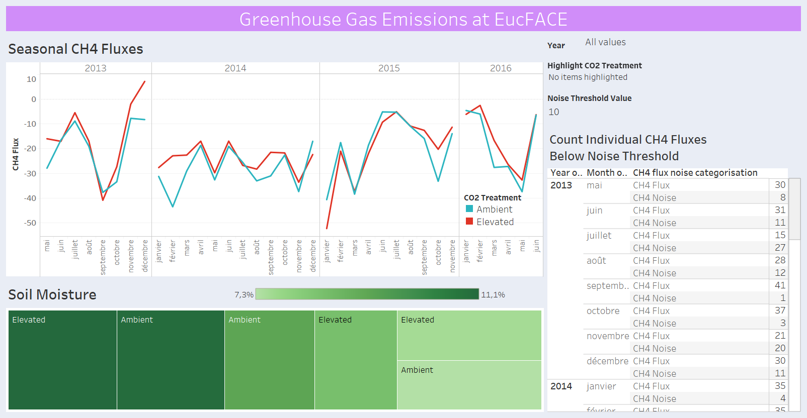

Welcome to Loïc Nazaries' Data Science Portfolio
Mon Elevator Pitch
Doué d'une grande appétence pour les statistiques, l'analyse exploratoire de données et l'apprentissage automatique (« machine learning »), le cycle de vie entier de la data me passionne, depuis la modélisation d'une base de données à son utilisation dans le domaine de l'informatique décisionnelle (« Business Intelligence ») en passant par la création de supports visuels simples et impactant comme les tableaux de bord (« Dashboards »).
Je consulte fréquemment les sites spécialisés pour découvrir de nouvelles technologies pour les appliquer plus tard dans mes projets de « Data Science ».
Je crois en l’apprentissage par la pratique et, dans un futur proche, je souhaite me spécialiser en Recherche Opérationnelle et DataOps.
Pensez-vous que nous avons des objectifs communs ?
Jetez un coup d'œil à ma biographie ici.

")


<!-- Étape 1
Étape 2
-->Quelques exemples de mon travail d'analyse de données
Table des matières
Mes compétences en science des données
La Figure 0 est le « Plan de Métro » de mes compétences en Data Science appliqué au métier de Data Analyst/Data Scientist.
Les « lignes » en circulation sont:
- Data Preparation
- Data Mining - Descriptive & Exploratory Data Analysis
- Forecasting
- Analysis of Variance
- Database Management System - Business Intelligence
- Machine Learning
- Data Visualisation - Dashboarding
More to come!

Figure 0: Metro Map of my Data Analyst/Data Scientist skills in the field of Data Science.
Mon Curriculum Vitae.
Mes projets actuels
Pipeline d'intégration, de nettoyage et de validation de données
Une base de données relationnelle de type « flocon de neige » a été modélisée à partir de fichiers de type et d'origine multiples (enregistreurs automatiques, mesures manuelles, fichiers au formats variés - .csv, .txt, tableur, etc.). Grâce aux fonctionnalités Python, ces données ont été uniformisées et "nettoyées" tout en respectant les bonnes pratiques statistiques (par exemple, pas de "cherry-picking", ni de "data dredging", etc. - cf. Data Fallacies to avoid).
En particulier, les trois étapes suivantes sont importantes dans tout projet de « Data Science » :
Typage des variables (category, integers/floats, strings, booleans, dates). Très important, en particulier, pour diminuer l'utilisation de la mémoire vive d'un ordinateur ou serveur
Remplacement (ou imputation) des valeurs manquantes (Figure 1). C'est une étape importante qui permet de préserver la puissance statistique d'un jeux de données
Before Imputation After Imputation 

Figure 1: The replacement (or imputation) of missing values by mathematical approach. Here, when the value of a replicated measurement (usually seven (7) replicates) was missing (left panel), it was replaced by the "mean" value of the other replicated samples. The remaining missing values (right panel) represent non-replicated data which can be imputed using more powerful machine learning approaches (not detailed here).
Transformation des variables pour obtenir une distribution dite « normale » (Figure 2). Le but est donc de diminuer le nombre de valeurs « extrêmes », c'est-à-dire des valeurs très éloignées de la valeur moyenne.

Figure 2: Mathematical transformation of nitrous oxide (N2O) emissions. The various « violin plots » represent different transformation of the raw data in order to seek « normal distribution » (e.g. standardised transformation, square-root transformation, etc.). The aim is to reach a symmetrical distribution and thus avoid (left- or right-handed) tails.
De manière plus générale, il s'agit de préparer les jeux de données pour les étapes d'analyses statistiques et de modélisation (« machine learning »)
Tableau de bord
Un tableau de bord (« dashboard ») interactif a été construit pour observer et tester les émissions des gaz à effet de serre sous différentes conditions. Cette application web appelée « Greenhouse Gas Estimation Portal » a été codé avec la librairie Python Streamlit et déployée sur Heroku.com. L'application peut être accédée par le lien suivant.
Il s'agit d'une application entièrement réglable une fois que l'utilisateur a créé un compte. Voici une liste (non-exhaustive) des options disponibles:
- téléchargement du fichier de données (format .csv ou .pkl)
- sélection des variables à inclure dans l'analyse
- typage des variables
- choix des variables dépendantes et indépendantes
- « dummification » possible des variables
- génération d'un résumé statistique (moyenne, écart-type, kurtosis/skewness, pourcentage des valeurs manquantes, etc.)
- agrégation des données par groupe (date, traitement, année, etc.)
- analyses univariées et bivariées
- analyses de corrélation
- analyses statistiques de type « REML » (restriction likelihood)
- envoie des résultats à l'utilisateur par email
Des captures d'écran sont disponibles dans la (Figure 3). Elles reflètent certaines des options disponibles à l'utilisateur.
| Login to GHG Estimation Portal | Variable Selection |
|---|---|
 |  |
| Time-Series Analysis | Email Option |
 |  |
Figure 3: Screenshots of various steps and options available to the user on the web application « Greenhouse Gas Estimation Portal ».
Note: Dans l'avenir, une section de machine learning sera disponible. Il sera en autre possible de procéder à une modélisation temporelle des émissions des gaz à effet de serre.
EDIT: application non disponible au moment de la préparation de cette page (10/01/2021).
Mes projets passés
Modélisation d'une base de données
Un système de gestion de base de données relationnelle (SGBDR) a été construit pour le projet « EucFACE ». La base de données a été implémentée avec le logiciel PostgreSQL (version 12.5) et pgAdmin4.
Note: le projet EucFACE est présenté brièvement ici.
Cliquer ici pour ouvrir la structure UML de l'application Greenhouse Gas Estimation Portal (voir la section précédente "Tableau de bord"). Y sont contenus les diagrammes de contexte, de fonctionnalités, de cas d'utilisation et d'activité de la base de données EucFACE.
Les Figure 4 et Figure 5 montrent, respectivement, le modèle conceptuel des données (MCD) et le modèle physique des données (MPD) de la base de données relationnelle EucFACE. Sa structure est de type « flocon de neige ».
Modèle conceptuel des données (MCD)

Figure 4: Modèle conceptuel des données (MCD) de la base de données relationnelle du projet "EucFACE".
Modèle physique des données (MPD)

Figure 5: Diagramme du système de gestion de base de données relationnelle (SGBDR) du projet "EucFACE".
Modélisation des émissions des gaz à effet de serre
Analyse des émissions de gaz à effet de serre dans des conditions de concentrations atmosphériques en CO2 élevées. En résumé, cela mimique les conditions de changement climatique prévues pour l'année 2100.
Voir la section EucFACE Site Presentation pour une description détaillée du projet, incluant l'hypothèse scientifique testée, matériel et méthodes et les références bibliographiques principales.

Vidéo 1: Moving up a ring at the EucFACE site.

Photo 1: Canopy view from Ring 1 at the EucFACE Site.
Une analyse temporelle (time-series analysis) a été appliquée (Figure 6) pour tester l'hypothèse scientifique de départ:
« Quel est l'effet de l'augmentation du dioxide de carbone (CO2) dans l'atmosphère sur les émissions des gaz à effet de serre? »

Figure 6: Greenhouse gas (GHG) emissions for méthane (CH4 flux - panel a), nitrous oxide (N2O flux - panel b) and carbon dioxide (CO2 flux - panel c). Ambient (blue line) and elevated (red line) atmosphérique CO2 concentrations represent the « treatment » applied to test the scientific hypothesis investigated.
There is a strong visible link between the intensity of GHG emissions and the intensity of the rainfall events (panel d).
Ces travaux ont été publiés par Martins, Nazaries et al., 2021.
Élaboration d'un indicateur clé de performance (KPI)
Un conglomérat d’agriculteurs australiens a financé une étude dans laquelle j’ai été chargé d’identifier les facteurs biologiques et environnementaux qui sont susceptible d’améliorer les rendements de blé en lien avec les pratiques d’agricultures communes en Australie (chaume brûlé, fertilisation, pâturage, labourage, etc.). Cette expérience était constituée de sites dans plusieurs régions/états de l’Australie. Un ample effort de coordination a été primordial au bon déroulement de cette étude, ainsi qu’une bonne communication avec les propriétaires des terres et les gouvernements locaux. J’ai aussi eu la charge de tenir notre base de données à jour et disponible auprès de mes collaborateurs.
Au terme de mes analyses, j’ai défini un indicateur clé de performance (« KPI » en anglais) qui révèle comment chaque pratique agricole impacte le recyclage des nutriments dans le sol, en d’autres termes, la qualité et la quantité des récoltes de blé. Durant ce projet, j’ai appris à ajuster mon discours de manière à le rendre plus compréhensible (travail de vulgarisation) auprès de non-spécialistes, c’est-à-dire les agriculteurs et les acteurs locaux. Voir la publication Nazaries et al., 2021.
The response of soil multi-functionality to agricultural management practices can be predicted by key soil abiotic and biotic properties. Agriculture, Ecosystems & Environment 307, 107206. doi:https://doi.org/10.1016/j.agee.2020.107206.


Figure 7: The effect of agricultural practices on the KPI (or Multifunctionality (MF) Index) at three locations (sites a, b and c - top panel). The bottom panel shows the modelling of the KPI and indicates which variables had the highest influence on the KPI. The modelling approach was Information theory and multi-model inference (MMI) and used the Akaike’s Information Criterion (corrected for sample size, or AICC) to compare the model strengths with each other.
Modélisation géographique
J’ai complété une étude décrivant les étapes de modélisation nécessaire pour prédire la répartition géographique de microbes dans le sol responsables de la réduction des concentrations de méthane (un puissant gaz effet de serre) dans l’atmosphère. Grâce au sponsor du gouvernement écossais, une grande base de données a été construite après un sondage du sol dans toute l’Écosse. L’objectif a été de collecter plusieurs données environnementales (température, pluies, humidité, nutriments, fertilité, composition minérale, etc.) pour mieux décrire les procédés biologiques dans le sol. J’ai réparti les tâches de modélisation entre mes collaborateurs pour faire avancer le processus intellectuel. Une fois les analyses terminées, j’ai écrit un article scientifique pour présenter nos résultats. Cela a été une occasion fantastique pour apprendre à manier des méthodes statistiques pointues. Voir la publication Nazaries et al., 2018.
Environmental drivers of the geographical distribution of methanotrophs: Insights from a national survey. Soil Biology and Biochemistry. doi:https://doi.org/10.1016/J.SOILBIO.2018.08.014.
| Geographical Modelling | Microbial Community Clusters |
|---|---|
 |  |
Figure 8: Geographical modelling of microbes involved in the uptake of atmospheric methane and its storage in soil (left panel). The right panel shows how microbes cluster with each other within different ecosystems.
J’ai rendu publique (open source) ma base de données sur le site figshare.com pour permettre à d’autres équipes d’utiliser mes données pour leurs propres études.
Coopération internationale
Après avoir établi une collaboration avec des chercheurs d’Australie, Angleterre, Écosse et États-Unis, j’ai mis en place une série de protocoles afin d’organiser les tâches administratives et techniques nécessaire pour remplir l’objectif de la mission (mesure des gaz à effet de serre). J’ai aussi eu à charge la formation des collaborateurs et la coordination des équipes pour garantir les délivrables. Une fois les données générées, je les ai soumis à une analyse descriptive complète qui inclue: agrégation et préparation ; enregistrement dans une base de données ; nettoyage ; détection de données aberrantes et de données manquantes ; transformation/normalisation ; exploration. Enfin, j’ai conduit toutes les analyses statistiques, j’ai préparé les résultats (tables et graphes) et j’ai décrit les conclusions dans un rapport de mission. Particulièrement, j’ai présenté les conclusions de cette étude devant les « clients », c’est-à-dire les organismes privés et publiques qui ont financés ma recherche. Grâce à cette expérience, j’ai réussi à gérer des projets de bout-en-bout ainsi qu’à faire face à des *challenges* administratifs, techniques et humains. Un des articles issus de cette collaboration est Martins, Nazaries et al., 2017.
Identifying environmental drivers of greenhouse gas emissions under warming and reduced rainfall in boreal-temperate forests. Functional Ecology 31, 2356–2368. doi:https://doi.org/10.1111/1365-2435.12928.
Autres exemples de Data Viz
Google BigQuery & Google Data Studio
Dans ce projet, le dashboard décrit le coût des budgets investis dans la production de films dans chaque pays.
Par example, le film le plus coûteux a été produit en 2006 en Corée du Sud. Par contre, les USA est le pays avec le plus gros budget pour le cinéma.
NOTE: les sommes indiquées ne sont pas réelles. Le jeux de données a été téléchargé depuis le site Kaggle.com en utilisant le lien suivant: IMDB 5000 Movie Dataset.

Méthodologie:
- Créer une instance d'ETL avec Google BigQuery depuis la console de Google Cloud Platform.
- Importer le fichier .csv depuis Kaggle.com.
- Connecter la source de données à l'instance d'ETL en utilisant le data connector BigQuery.
- Formuler une requête SQL.
- Créer un rapport (dashboard) avec Data Studio.
Le gist de ce projet est disponible dans la section Mes Scripts/Gists.
Tableau Visuals & Dashboard
Il s'agit là d'une collection de graphiques mettant en avant les conséquences (ou plutôt le manque de conséquences) d'une élévation de la concentration atmosphérique en CO2 sur les émissions des gaz à effet de serre méthane (CH4), dioxide de carbone (CO2) et N2O. Ces émissions ont une origine microbiennes et ont un impact majeur sur la balance du réchauffement climatique.
Les correlations de ces gaz avec la température de l'air, l'humidité du sol et la température du soil sont aussi explorées car ces variables environnementales jouent un rôle crucial sur les émissions des gaz à effet de serre. Les variations saisonnières et annuelles de ces émissions sont aussi observées.
Les résultats sont rassemblés dans le fichier Microsoft PowerPoint suivant. Ci-dessous se trouve un aperçu de ces graphes avec, en particulier, un tableau de bord créé avec le logiciel Tableau.

Le fichier sous le format "Tableau Packaged Workbook" (lecture du fichier avec Tableau Reader) est disponible ici.
Alteryx Designer Workflow
Bientôt !
Mes Scripts/Gists
Créer un environnement virtuel avec Python
Dans tout projet data, il est important de pouvoir créer un environnement technique reproductible par une autre personne ou sur un autre ordinateur. Ceci signifie que le langage de programmation (Python, par exemple) et la version des librairies utilisées lors de l'écriture d'un script doivent être établis dès le début du projet.
Pour cette raison, il est courant de créer un environnement virtuel qui va contenir toutes ces données ainsi que la structure des dossiers contenant les fichiers essentiels au projet.
Voici donc un script, ou gist, qui détaille les différents étapes de la création d'un environnement virtuel avec le module "venv" de Python.
Le gist est disponible ici ainsi que sur GitHub Gist.
Créer un environnement virtuel avec Conda
Ici, contrairement au module standard de Python (venv), la gestion des librairies Python nécessaires au projet data sont gérées grâce à Conda. Il s'agit du même principe de création d'un environment virtuel.
La différence avec un le module "venv" de Python est que la version de Python (par exemple version 2.7 vs. 3.9.1) est aussi installée.
Le gist est disponible ici ainsi que sur GitHub Gist.
Créer un dépôt de projet avec GitHub
Bientôt !
[//]: <Le gist est disponible ici ainsi que sur GitHub Gist.>
Déployer une application web avec Heroku
Bientôt !
Pipeline d'un projet de Data Science
Bientôt!
Préparer un dashboard avec Google BigQuery et Google Data Studio
Google a mis à disposition un outil de procession de données de type Big Data appelé Google BigQuery. Grâce à leur plateforme Google Cloud Platform, il est possible de mettre en place un pipeline de gestion et d'utilisation de données. De plus, il est possible d'utiliser Google Data Studio gratuitement(!) pour préparer des dashboard interactif ainsi que de le partager avec d'autres collaborateurs.
Voici donc un script, ou gist, qui détaille les différents étapes de la création d'un tel workflow.
NOTE: le script présenté a besoin d'être édité pour bien organiser les différents étapes. Cela sera bientôt fait.
Le gist est disponible ici ainsi que sur mon GitHub Gist (bientôt!).
Mes jeux et bases de données
Bientôt !
Autres réalisations professionnelles
Maître de thèse
J’ai eu la responsabilité de superviser deux étudiantes. Je les ai soutenues dans la définition et la construction de leur projet de recherche : identification des lacunes scientifiques ; mise en place des protocoles ; formation technique et littéraire ; analyse des données et écriture de leur manuscrit de thèse. Le plus gratifiant a été quand j’ai assisté à leur cérémonie de remise des diplômes.
Revue littéraire
J’ai recherché sur internet des centaines d’études et d’articles en rapport avec mon thème de recherche : les émissions biologiques du gaz méthane (CH4) qui produit un effet de serre 31 fois plus puissant que the dioxide de carbone (CO2). J’ai décrit les bactéries responsables du cycle du CH4 entre l’atmosphère et le sol ainsi que leurs propriétés génétiques et biochimiques. J’ai concentré mes trouvailles en une large revue publiée dans un journal scientifique (voir Nazaries et al., 2013).
Methane, microbes and models: fundamental understanding of the soil methane cycle for future predictions. Journal of Environmental Microbiology. doi:https://doi.org/10.1111/1462-2920.12149.
Optimisation de procédés quantitatifs
Ou, Surmonter une difficulté.
J’ai été confronté à une situation frustrante au cours de laquelle un system de détection génétique était défectueux. J’ai opéré une recherche bibliographique au cours de laquelle j’ai trouvé un algorithme d’optimisation opérationnelle appartenant aux méthodes Taguchi. L'utilisation d'une loss function spécifique m’a aidé à franchir cet obstacle. Cette approche est beaucoup utilisée dans l’industrie pour améliorer la qualité des produits de confection ; mais j’ai su l’adapté à ma technologie génétique.
Les méthodes Taguchi sont applicables à tout procédés quantitatifs. Si vous cherchez à optimiser une méthode de détection génétique appelée qPCR, j'ai préparé une présentation qui pourrait vous intéresser.
Exploration de l’Écosse
Mon projet d’étude nécessitait la sélection de plusieurs sites écologiques pour la mesure de flux de méthane dans l’atmosphère. J’ai dû sélectionner des sites aux quatre coins de l’Écosse afin d’avoir des conditions variées. J’avais aussi la charge de préparer toute la logistique, trouver des collaborateurs disponibles sur plusieurs jours, et ce, durant les quatre saisons de l’année, et pendant trois ans. C’était un projet très difficile et demandant qui m’a permis d’apprendre beaucoup, autant au niveau technique et professionnel qu’au niveau personnel et humain.
Écrire une thèse doctorale
C’était une épreuve très demandant et difficile. On m’a donné un thème de recherche et j’ai dû faire tout le reste : recherche littéraire ; planification des expériences ; génération des données ; analyses statistiques ; et surtout, écriture de ma thèse de fin d’étude. J’ai retranscrit tout ce que j’avais fait pendant plus de trois ans. Finalement, j’ai publié cette thèse dont je suis très fier. Cela m’a beaucoup appris : indépendance, autonomie, adaptabilité, organisation, rigueur.
Nazaries, L., 2011. Impact of land-use changes on the methanotrophic community structure. Thesis University of Warwick.
Mes publications scientifiques
Cliqué ici pour accéder à la liste des publications.